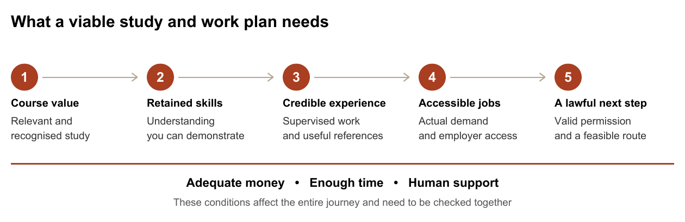

AI and African
Students Abroad
What AI changes before departure, in the classroom and on the way to work. A complete guide for African students and the families financing their future, including the consequences for the countries they leave.
About this report
For African students, prospective migrants, families, educators, diaspora organisations and education funders
The central finding. AI can make high-quality preparation, learning and professional support more accessible. It can also make the transition from student to skilled worker more competitive, less transparent and financially dangerous for people with limited savings and temporary immigration status. The outcome depends on the course, the country, the student's circumstances and the institutions around them.
This report follows the complete journey: deciding whether to move, paying for education, applying, crossing the border, learning, working during study, finding a graduate role, progressing, settling where eligible, or returning home. It also examines what these changes could mean for African economies and the families financing migration.
This Africa Global Forum report brings together six earlier reports in our research library and 40 research, statistical, policy and consumer-protection sources. It connects their strongest ideas and revisits claims that need tighter definitions or updated context.
How to use this report. Read Sections 1 to 3 before paying a deposit, Sections 4 to 11 before departure, and Sections 12 to 17 when building an individual or institutional plan. Section 18 explains the research foundations and the claims that require qualification. Numbered citations link to sources or source notes.
Scope and limits. This is a research synthesis and scenario analysis, not a prediction of everything that will happen. Most AI labour-market studies do not identify African international students separately. The country comparison covers six destinations and is a dated orientation, not a complete immigration manual. Verify the exact rules for the applicant, institution, course and application date before committing money.
Section 01What changes for an African student
For many families, overseas education is a joint investment. One person studies, while parents, siblings or a wider community contribute savings and expect future opportunity. That makes the consequences of an unsuccessful transition broader than one graduate's disappointment. AI belongs in this conversation because it can change both the preparation available to the student and the work available after graduation.
The first change is encouraging. A student who cannot afford a private counsellor can use AI to understand unfamiliar terminology, compare official requirements, practise language, rehearse interviews and identify gaps in their knowledge. A strong student at an under-resourced institution can obtain repeated explanations and feedback that were previously difficult to access. These uses can reduce some disadvantages, provided the student checks important claims and retains control of decisions.
The second change is harder. Some tasks historically assigned to junior workers can now be drafted or partly completed by software. If employers respond by hiring fewer beginners, students lose opportunities to acquire experience even while tools make them more productive. Whether this happens depends on demand, adoption, business design and the cost of human review. Current evidence signals pressure in some settings, not the disappearance of graduate employment everywhere. [3][4][5]
The third change concerns trust. When polished applications, essays and portfolios become inexpensive to generate, their appearance alone reveals less about the person behind them. Students may need stronger evidence of authorship and competence: a live demonstration, a supervisor who can describe their contribution, a documented project and an explanation of how they checked their work. This is an inference about incentives, not a measured universal change in admissions.
The fourth change is unequal exposure to the consequences. A domestic graduate and an international graduate may compete for the same role, but the latter may also face a time-limited permission to work, sponsorship conditions, currency losses and pressure to support relatives. The technology can be identical while the financial and legal consequences are very different.
The practical conclusion is conditional. Overseas study can remain an excellent choice when it delivers scarce skills, credible experience, research access, valuable relationships or a qualification needed for a profession. A financially fragile plan that depends on immediate employment deserves much closer examination. The sensible comparison includes a funded route abroad, gaining experience first, another destination, regional African study, and learning while working at home.
Africa is not a single starting point. A Kenyan undergraduate, a Moroccan doctoral researcher, a Nigerian nurse and a South African software professional face different qualifications, languages, passports, networks and household resources. African citizens who also hold destination-country citizenship or permanent residence may have substantially different work rights. Advice should begin with the person's circumstances.
Section 02What the evidence actually tells us
Five kinds of evidence appear in this debate. Exposure estimates ask which tasks a technology could affect. Experiments test a specific intervention. Administrative studies observe employment or earnings. Surveys and vacancy platforms capture particular respondents or postings. Rules describe legal eligibility. None can substitute for all the others.
The following register contains the main quantitative anchors. The observation period is included because a report published in 2026 may use much older data. Figures should travel with their definitions when used in a post.
| Evidence | Finding and population | What it does not establish |
|---|---|---|
| International mobility [1][2] | Nearly 7.3 million students were internationally mobile in 2023. UNESCO reports an outbound mobility ratio of 4.9% for sub-Saharan Africa versus 2.8% globally. | These are not counts of 2026 departures or percentages of all African young people. |
| Global AI exposure [3] | The ILO's 2025 assessment puts about one in four workers in occupations with some generative AI exposure. | Exposure is not a probability that a person will lose their job. |
| Early career employment [4] | US ADP data through June 2026 show a 19% relative employment gap for workers aged 22 to 25 in AI-exposed occupations versus the path implied by less-exposed peers. | This is descriptive, not a causal estimate or a 19% unemployment rate for African graduates. |
| UK graduate vacancies [6] | Adzuna reported graduate postings down 45% year on year in January 2026. | One platform category and period do not describe every UK vacancy or identify the share caused by AI. |
| UK application pressure [7] | ISE's 2025 survey item covered 86 organisations: mean 140 applications per graduate vacancy, median 97. | Applications are not necessarily unique people. This is not an economy-wide census. |
| Productivity with assistance [8] | A study of 5,172 customer-support agents found average issues resolved per hour increased by 15% with an AI assistant. | Higher measured productivity does not automatically mean higher wages or more jobs. |
| Different labour-market evidence [5] | A Danish study revised in March 2026 found no detectable average earnings or recorded-hours effects, ruling out effects larger than 2% in its early observation window. | Early limited effects do not prove that later impacts, other countries or entry-level hiring will be unchanged. |
| Graduate mismatch [9] | In 2025, EU over-qualification was 41.4% among employed tertiary-educated non-EU citizens versus 20.0% among nationals. | The figures cover broad citizenship groups, not African students specifically, and do not measure AI causation. |
The Stanford authors also report no widespread economy-wide displacement. They identify reduced hiring as the main channel in their sample and note that results weaken under some controls and differ from national survey benchmarks. The appropriate response is to monitor entry routes carefully, rather than treat one paper as a verdict on every career. [4]
There is no contradiction in AI helping individual workers complete tasks while employers hire fewer people for some tasks. Productivity, headcount, wages and the distribution of opportunities are different outcomes. Conversely, employers may expand output, lower prices and create additional roles. The report's scenarios preserve both possibilities.
The biggest data gap is personal relevance. The reviewed evidence does not provide a reliable AI-caused job-loss rate, earnings forecast or visa-success probability for African international students across destinations. Producing such a number would require linked information about nationality, course, occupation, immigration status, hiring and actual AI adoption. A precise-looking percentage without those foundations would be misleading.
Section 03Decide what the overseas investment is buying
A degree can deliver several kinds of value: knowledge, assessment, a recognised credential, access to facilities, relationships, professional entry and an opportunity to spend time in another labour market. AI can make some knowledge easier to access without replacing the rest. A course should therefore explain what students gain beyond material they could study independently.
Ask for evidence at the level of the exact programme. An institution's overall employment rate can combine domestic and international students, full-time and part-time work, unrelated jobs, further study and people whose circumstances differ from yours. Ask for the denominator, response rate, survey date, time since graduation, occupation match and destination of graduates. A programme may be unable to supply all of this; that absence is a source of uncertainty, not proof of poor performance.
Treat a placement as a concrete arrangement to investigate. Who finds the employer? Is the place guaranteed or competitive? Is it paid? Are international students eligible? Does it require separate permission? What happens if nobody recruits the student? Relevant work experience is valuable, but an attractive course description does not ensure access. Historical Canadian administrative research found pre-graduation work experience helped explain later earnings differences; it did not establish earlier reports' claimed universal 92% versus 65% co-op employment split. [37]
Build a budget that can survive a delay
Separate cash required, funding actually committed and economic cost. Cash includes tuition, rent, deposits, travel, permits, insurance, equipment, professional exams, dependants and a period of job searching. Economic cost also includes earnings and experience forgone. A refundable housing deposit can be a cash requirement without being a permanent expense. Count each item once.
The following is a hypothetical one-year programme, expressed in destination-currency units. It is not a cost estimate for any particular country. The adverse case assumes 15% higher study-period living costs and a nine-month search rather than three months.
| Cash item | Planning case | Adverse case |
|---|---|---|
| Tuition and compulsory fees | 20,000 | 20,000 |
| Living costs during study | 12,000 | 13,800 |
| Travel permits insurance and setup | 3,000 | 3,000 |
| Search period living costs | 3,000 | 10,350 |
| Emergency and return reserve | 2,000 | 2,000 |
| Total cash required | 40,000 | 49,150 |
| Confirmed scholarship | 10,000 | 10,000 |
| Cash to finance from other sources | 30,000 | 39,150 |
Assume no part-time earnings in this initial survival test. Add a separate realistic earnings case only after checking permission, likely hours, local demand and study workload. If the home-currency cost of buying the destination currency rises by 15%, funding the adverse case would require about 50% more home currency than funding the planning case at the original exchange rate: 39,150 multiplied by 1.15, divided by 30,000. These are chosen stress assumptions, not forecasts.
Borrowing can cover cash needs while increasing repayment risk. Compare actual interest, fees, repayment start dates, guarantor obligations and exchange-rate exposure. A scholarship covering tuition can leave a substantial living and transition gap. Future earnings that are not contracted should not be treated as secured funding.
Compare outcomes in terms of disposable resources
A salary converted into shillings or naira can look large while leaving little after local housing, tax, transport and debt payments. Estimate the additional disposable resources generated relative to the realistic alternative at home. Include the possibility of returning after graduation, working outside the desired occupation, or needing another licensing exam.
For illustration, a net economic investment of 30,000 recovered through an additional 5,000 a year of disposable resources takes six years to repay before interest and discounting; at 2,000 it takes fifteen. Neither number estimates an actual student's return. The purpose is to reveal how sensitive the decision is to a modest change in the earnings advantage.
A useful family agreement records the maximum affordable loss, which assets will not be put at risk, when remittances could reasonably begin, and what would trigger a change of plan. A return home can be a planned response to circumstances. Continuing an unaffordable search solely to protect appearances can make the eventual outcome worse.
Section 04Applications and borders in an automated environment
AI can help applicants organise questions, explain unfamiliar requirements and compare programmes using official information. Its most valuable contribution may be helping a first-generation applicant understand what to ask. It can also invent a scholarship, misread a deadline or combine rules from different countries. Use it to prepare a checklist, then attach a current primary source to every consequential requirement.
Admissions and immigration are separate processes. A university offer does not resolve a visa decision, permission to work, programme eligibility for a later permit, professional licensing or permanent residence. Record these as separate checks. An education agent's enthusiasm cannot substitute for written confirmation from the body responsible for each decision.
Make the application clear and truthful
Use AI to identify missing dates or unclear explanations in a redacted draft. Confirm the result against original records. Preserve authentic qualifications, employment dates, funding evidence and personal experience. Do not let a model invent a research interest, employer, award or explanation that the applicant cannot substantiate.
A generic personal statement may erase the specific evidence that makes an applicant credible. Begin with the person's actual work, questions and reasons for choosing the course. Follow the institution's rules about assistance. Preparation for an interview should help the applicant explain their own choices, not memorise a fabricated story or use undisclosed live assistance during a prohibited assessment.
Distinguish software assistance from an AI decision
The earlier border report sometimes treats all digital processing as AI. IRCC describes Chinook as an Excel-based processing aid that displays case information and does not use AI, make decisions or recommend decisions. In separate May 2026 material, IRCC says its AI, analytics and automation tools do not refuse applications or recommend refusals, with officers accountable for decisions. These are official descriptions, not independent proof that every process is free from error or bias. [10][11]
Historical concerns still matter. Foxglove reported in 2020 that the UK would withdraw a visa-streaming tool following its legal challenge, which alleged nationality-based discrimination. That account illustrates why scrutiny is necessary; it does not establish that today's visa file is always first assessed by an AI system or that all current systems work alike. [12]
For applicants, the useful response is accurate documentation, a record of submissions and timely advice on correcting errors or challenging decisions where a route exists. There is no reliable universal prompt or wording trick that makes an immigration algorithm approve an application.
Research students face additional questions
For a doctorate or a technically sensitive programme, confirm supervisor availability, funding duration, computing access, rights to publish, ownership of research outputs and any security or export-control restrictions. The UK's ATAS requirement applies to certain foreign students and researchers in specified sensitive subjects. Subject and nationality conditions must be checked; admission alone does not settle them. [38]
AI research also changes quickly. A project tied narrowly to one commercial model may become difficult if access, licensing or pricing changes. Seek a training environment that builds transferable methods, reproducibility and domain knowledge, with a feasible alternative if a vendor or dataset becomes unavailable.
Section 05Use AI to strengthen learning and preserve competence
The strongest educational use is often an interactive practice partner. Ask for a question, attempt it, explain the reasoning, receive feedback and try a new problem without assistance. A learner can request a simpler explanation or examples related to familiar African contexts, then check accuracy with course materials. Translation and language practice can support access, but subject terminology still needs to be learned precisely.
There is encouraging African evidence. A six-week Nigerian secondary-school intervention combining generative AI with structured educational support improved a combined assessment by 0.31 standard deviations. The assessment included English, AI knowledge and digital skills. This supports evaluating supervised designs; it is not proof that an unrestricted chatbot alone produces the same gains at university. [28]
There is also a warning. A randomized Turkish high-school mathematics study found that students using a relatively unrestricted interface performed worse on subsequent unassisted exams than the control group, a 17% relative reduction in grades. A tutor designed with learning safeguards largely avoided that negative effect. These are short-term results from a specific setting. They show why completed homework and retained skill must be measured separately. [29]
Follow the permission for the particular assignment
Universities and lecturers can permit different forms of assistance. Oxford, for example, requires assignment-specific clarity about allowed AI use and the expected declaration. It states that work breaching those specifications constitutes cheating and may constitute plagiarism. A university providing an AI account does not imply that every use is allowed in assessed work. [26]
Keep a small record for each assessment: the rule, your initial notes, sources actually read, substantive drafts, permitted assistance and the final disclosure. Check citations by opening the original paper. Check calculations independently. Never submit a fabricated bibliography, invented interview, fictional survey respondent or manufactured result.
Understand the limits of detection
A 2023 study of seven detectors found that about 61% of a sample of 91 human-written TOEFL essays were falsely flagged on average; 97.8% were flagged by at least one detector. The essays came from a Chinese educational forum, not an African student sample. This is evidence about those tools and texts at that time, not today's universal false-positive rate or a measure of every commercial detector. [27]
If accused unfairly, preserve evidence and use the institution's response and appeal procedures. Ask what evidence supports the allegation and whether a human review can consider drafts, source notes and an explanation of the work. Do not respond by buying an essay-rewriting service that promises to defeat detectors. The immediate goal is to establish authorship and follow a fair process.
Build two forms of capability
Practise both working with approved tools and performing the essential reasoning without them. A graduate who can produce an impressive answer but cannot explain assumptions, identify errors or continue during an outage is vulnerable. Useful evidence includes an unassisted problem explanation and a separate account of how AI improved a real task. This dual practice supports examinations, interviews and professional accountability.
Section 06The transition from study to skilled work
AI can affect hiring through several mechanisms: employers may reduce routine tasks, increase output with the same team, raise expectations of beginners, create new integration work or change how applicants are screened. An occupation contains many tasks, so a job title alone is a poor guide to exposure. A software role may combine code generation with architecture, security, requirements and maintenance; an accounting role can combine document handling with judgement, controls and responsibility.
The practical question is which tasks a new employee will be paid and trained to perform in a particular organisation. Ask employers and recent graduates how junior roles have changed. Look for genuine supervised responsibility. A placement that consists entirely of repetitive output with little feedback may develop less durable capability than its title suggests.
Investigate the market before choosing the course
Review a manageable sample, such as 30 current vacancies, for the target location and role. This is a research exercise, not a statistically representative labour-market survey. Record the essential skills, experience requested, language, salary where shown, work-authorisation wording and whether the employer discusses sponsorship. Repeat it later to see whether the pattern changes.
Speak with several recent international graduates, including people still searching or who returned home. Alumni selected by a marketing team may be unusually successful. Ask about time to first relevant job, applications that reached interviews, placement access, living costs and what the course failed to prepare them for. Do not infer a population success rate from a handful of stories.
Make competence easier to verify
A strong portfolio explains the problem, the audience, the student's contribution, the method, how results were checked and what remains uncertain. Where permitted, include a short demonstration and a referee who observed the work. Use public or consented data. A health student must not upload patient information to demonstrate an AI workflow; a finance student should not expose client records.
AI can improve a CV's clarity or identify missing evidence, but the applicant must substantiate every claim. If an employer bans AI during a test or interview, follow that rule. Applications should be legible to people and software without hidden keywords, invented credentials or manipulative instructions aimed at screening systems.
Experience helps only when it transfers
The earlier reports distinguish a new graduate from an experienced professional. Yet experience acquired in Africa may still require explanation, local recognition, language skills or evidence of comparable responsibility. A postgraduate degree can deepen a career; it can also place an experienced person back into a crowded graduate recruitment channel if the programme does not connect to their existing expertise.
Before enrolling, identify roles that value the combination of previous experience and the new qualification. Ask whether relevant employers hire through experienced recruitment, graduate schemes or both. Build case studies of actual outcomes at home. An employer's ability to understand that experience matters more than simply adding years to a CV.
No discipline is automatically protected
Healthcare, engineering, skilled trades, teaching, research and relationship-intensive services may involve physical work, legal responsibility or human trust that changes the form of AI adoption. They still face software, robotics, funding pressures and changing standards. They can also require costly licensing and long training. Choose a profession for aptitude, realistic demand and willingness to meet its requirements; no credible report can issue a permanent list of AI-proof degrees.
New opportunities may emerge in model evaluation, data quality, cybersecurity, accessibility, workflow design, local-language services and sector-specific implementation. These are areas to investigate through actual vacancies and customers, not guaranteed new occupations available to every graduate. An AI certificate without domain competence or a route to practice has limited explanatory value.
Section 07Immigration status changes the employment calculation
The table summarises selected routes as checked on 28 September 2026. These are not directly comparable promises of unrestricted job searching. Nationality, previous permits, institution, qualification, study dates, attendance, language and other conditions can change eligibility. None automatically guarantees a job or permanent residence.
| Destination | Selected route after study | Decision that must be checked |
|---|---|---|
| United Kingdom [13] | Graduate permission generally lasts two years for applications by 31 December 2026 and 18 months from 1 January 2027. Doctoral graduates receive three years. It starts on approval. | Application date matters. Later sponsored work has separate requirements. |
| Canada [17][18] | Eligible master's graduates can obtain a three-year PGWP for qualifying programmes of at least eight months, subject to conditions. Other credentials follow different duration rules. | Confirm the exact programme and institution, language requirements, applicable field rules and passport validity. |
| United States [20] | F-1 OPT generally offers up to 12 months, with a possible 24-month STEM extension for eligible cases. Work must meet the relevant conditions. | Post-completion OPT normally allows no more than 90 unemployment days, or 150 across OPT and the STEM extension. This is not three years of unrestricted searching. |
| Germany [21] | Graduates of German higher education can seek a residence permit of up to 18 months to find skilled employment. | Funding, eligibility, the permit's conditions and the subsequent work route need checking. |
| France [22][23] | A one-year job-search or business-creation route is available after specified French qualifications, including eligible master's-level awards. | Nationality and bilateral arrangements can change the route. Qualification and employment conditions matter. |
| Australia [24] | General Post-Higher Education Work durations are two years for bachelor's and taught master's awards, three for research master's and doctorates. | Usually age 35 or under at application, with exceptions including qualifying research master's and doctoral graduates under 50. Check study requirements and nationality-specific provisions. |
A job offer can still fail the immigration test
In the UK, the usual Skilled Worker salary test is the higher of £41,700 and the occupation's standard going rate. Qualifying new entrants may instead meet a £33,400 floor and 70% of the standard going rate, subject to eligibility and time limits. Other categories and exceptions exist. The employer must also be an approved sponsor and the job eligible. A blanket claim that every graduate must earn £41,700 is therefore wrong. [14][15]
More generally, a role can be suitable academically while the employer declines sponsorship or the occupation, pay, contract or registration fails a route's requirements. Ask about future sponsorship early, using the employer's own policy. Being on a sponsor register does not mean an organisation sponsors every job or applicant.
Plan around the earliest binding deadline
The relevant calendar includes course completion, recruitment cycles, permission expiry, application windows, professional examinations, employer start dates and any unemployment limit. These clocks do not necessarily start together. Some graduate recruitment takes place well before graduation, so waiting until the final examination to learn how recruitment works can be costly.
Make a dated calendar with a qualified adviser or university international office. Confirm what happens during a pending application and after a job ends. Do not assume a rule from a friend's earlier cohort still applies. Policy changes, geopolitics, housing pressure and administrative capacity can affect migration independently of AI.
The table does not cover every destination, intra-African movement, every residence category or every nationality exception. Use the same verification method for other countries. A longer advertised permit is only useful if the student can afford to remain, obtain appropriate work and meet the next route's requirements.
Section 08Working while studying and the income question
AI may help a student complete permitted work more efficiently or build a small service. It does not create a general exemption from employment, business, tax or university rules. A customer being overseas or a payment entering an African bank account does not by itself establish that the activity is permitted where the student lives.
Rules differ materially. Eligible Canadian students can generally work up to 24 hours weekly off campus during regular terms; the official guidance separately addresses self-employment and remote work for an employer outside Canada. The UK's Student route generally prohibits self-employment and business activity, with a narrow specified exception, even where limited paid employment is allowed. US F-1 work depends on the authorised category. [19][16][20]
For many UK degree students with an eligible sponsor, term-time employment is limited to 20 hours weekly. Australia's usual limit is 48 hours per fortnight in session, with research master's and doctoral exceptions. Germany's official portal describes 140 full days or 280 half days annually, or up to 20 hours weekly, within the applicable student provisions. These limits are not forecasts of hours an employer will actually offer. [16][25][21]
Treat business income as uncertain operating income
An AI-assisted service still requires customers, delivery, quality control, lawful data handling, support and payment collection. A digital product requires marketing, updates and often refunds. Much activity advertised as passive income is active work with uncertain demand. Whether an activity counts as work or business for immigration purposes is a legal question, not a label selected by the seller.
Where the activity is permitted, start with a small paid problem rather than a large promise. Examples to test include accessible learning materials, a verified administrative workflow for a small business, or specialist research support within the student's competence. Do not sell unqualified medical, legal or immigration advice. Do not produce assignments for others to submit as their own.
An illustrative service with ten clients paying 100 each brings in 1,000 currency units. If tools, payment charges and other direct costs total 200, the cash contribution is 800 before tax and owner pay. If acquiring and serving those clients takes 60 hours, that is about 13.33 per hour before tax, additional overhead and risk. Neither the clients nor the price is guaranteed. This arithmetic is more useful than calling 1,000 passive income.
Protect study time and future eligibility
Long work hours can crowd out the very learning, relationships and relevant experience for which the student travelled. Some paid work is essential, but a budget requiring maximum hours every week leaves little room for illness, exams or reduced shifts. Build the financing plan so that legal limits are ceilings, not targets that must always be reached.
If a new opportunity involves freelancing, a platform, online teaching, content monetisation or running a business, describe the actual duties to the appropriate adviser before starting. Record permissions, hours where required, contracts and income. Immigration permission and tax obligations are separate issues; satisfying one does not automatically satisfy the other.
Section 09Bias privacy and the right to challenge a mistake
Automated tools can help institutions handle applications consistently and identify information needing attention. They can also reproduce problems in the data, select inappropriate proxies or fail for people whose circumstances differ from the data used to build them. Human decisions can be biased too. The relevant question is whether a particular process is accurate, fair, accessible and open to correction.
An African qualification may be unfamiliar to a recruiter. A name, employment location, language pattern or interrupted education can interact with a system's design in ways the applicant cannot see. These are risks to investigate, not evidence that every employer uses such variables or that every rejection reflects discrimination. Distinguish a lawful eligibility requirement from an inaccurate inference or a discriminatory practice.
The burden can be especially heavy when several decisions depend on the same incorrect information. An error in a translated transcript might spread from an application to a credential assessment and later verification. Keep originals, certified translations where required and a record of corrections. Avoid entering inconsistent dates or names merely because different AI drafts suggested them.
Screening can affect daily life too
Where a landlord, lender or work platform uses automated checks, a newcomer with limited local records or inconsistent documentation may have difficulty establishing eligibility or correcting an error. A platform's rating or account suspension could affect income while the person seeks a review. These are possible mechanisms, not estimated rates for African students. Ask what evidence is accepted, retain records and identify the relevant correction or complaint process. Budget for delays in obtaining housing, banking or access to work.
Accessibility is part of fair assessment
Speech, timed tests, facial analysis or monitoring tools may assess something other than the ability to do the job. A disability or communication difference can make an otherwise qualified person perform poorly under an unsuitable format. US EEOC guidance explains that employment protections and reasonable-accommodation duties can apply when employers use AI. Elsewhere, the applicable protections and procedures must be checked locally. [30]
Students should learn the university's disability and assessment-adjustment process before a crisis. Where needed, ask for an accessible alternative and explain the functional barrier. Organisations should test tools with affected users, rather than assume a vendor's general accuracy score establishes suitability for every group.
Do not promise legal protections before they apply
The European Commission's current AI Act page includes education, employment and migration among specified high-risk areas, with the relevant high-risk rules scheduled to apply from 2 December 2027 following the 2026 amendments. Older summaries giving a blanket August 2026 date are unreliable for this purpose. Existing equality, employment and data-protection rules may also matter, but rights and remedies depend on jurisdiction and facts. [31]
If a decision appears wrong, save the notice, relevant correspondence and the information submitted. Ask about correction, reconsideration, an accessible process and available review. Obtain timely local advice where legal deadlines apply. A general demand for a human to reverse a decision is not an automatic right everywhere, and human involvement alone does not establish fairness.
Keep sensitive information out of unnecessary systems
Student applications contain passports, addresses, bank statements, family finances, immigration histories and sometimes medical information. A convenient AI adviser is still a service with data handling arrangements. Review institutional approval, access controls, retention and sharing before using it for sensitive material. Where possible, work from a redacted description instead of uploading originals.
Treat links, downloads and instructions inside generated or retrieved content cautiously. An assistant that can send emails, submit forms or move files can make consequential mistakes faster than a drafting tool. Require a human check of recipients, attachments, financial details and declarations before an action is completed. Retain copies outside a single vendor's account.
Section 10Scams and the price of convincing appearances
AI makes it easier to produce persuasive messages, realistic voices and professional-looking documents. This can strengthen an old scam without changing its basic mechanism: urgency, borrowed authority, secrecy and a request for money or personal information. Students seeking a scholarship, accommodation, an employer or urgent visa help encounter several opportunities for impersonation.
The FTC reported more than USD 220 million in reported job-scam losses in the first half of 2024. That is a US reporting measure; it does not tell us how much Africans lost or what share involved AI. It nevertheless supports treating recruitment fraud as a real financial risk, rather than an occasional spelling-filled email. [32]
| Situation | What to verify independently | Immediate response to concern |
|---|---|---|
| Scholarship or university offer | The award, eligibility and payment instructions through the institution's real website and published contact details | Pause payment and ask the institution to confirm the specific offer |
| Job requiring a deposit to unlock tasks or earnings | The employer, contract and claimed recruitment process | Do not pay to release supposed wages or task commissions |
| Housing agent requesting urgent payment | Property existence, authority to let it and the actual contract | Verify through trusted local support before transferring funds |
| Urgent family emergency with a familiar voice | Contact the person through a number already known to be theirs | End the incoming call and independently reconnect |
| Visa adviser promising approval | Adviser credentials, service terms and the government's actual requirements | Reject guaranteed-approval claims and verify before sharing documents |
Some legitimate universities charge published application fees. The safe rule is therefore not that every fee proves fraud. Verify who is charging, for what service, under which published terms and through which payment channel. An official-looking document or a successful video call is not sufficient authentication.
Before departure, agree with family on a verification routine for unusual requests. The FTC specifically warns that a familiar voice can be cloned and recommends contacting the person through a known number. A family check phrase can add friction, but it should not replace independent contact because personal information can leak. [39]
If money or documents have been sent to a suspected scammer, contact the payment provider and relevant institution promptly, preserve evidence, secure affected accounts and use the appropriate reporting channel. Recovery is uncertain. Shame and secrecy can delay action, so families should agree that reporting an error quickly will be supported.
Section 11The human life around the degree
A technically strong plan can fail because housing is unstable, health support is inaccessible, a partner cannot work, or the student feels unable to admit financial difficulty. These are not secondary issues. They affect attendance, concentration, job searching and the ability to make sound decisions under pressure.
Language and belonging
AI translation can make an unfamiliar environment easier to navigate. It cannot reliably convey every legal nuance, social cue or professional convention. Use it to prepare for appointments and practise conversation, while developing the language needed for unscripted work. Check whether assessments allow translation assistance. A course taught in English does not mean all local employers work in English.
There is also a question of voice. Students should not feel obliged to erase their accent, background or intellectual interests to sound machine-polished. Clear communication can coexist with an authentic identity. Mentors can help explain unfamiliar workplace expectations without treating one cultural style as evidence of superior ability.
Loneliness and family expectations
An AI companion may feel available when people are not, but a student also needs human relationships and accountable support. Identify the university's counselling, welfare, international office and emergency channels, and build contact with peers beyond a single online group. Use qualified professionals for health concerns; a chatbot's reassuring tone is not a clinical assessment.
Families can help by separating support from a fixed timetable for financial success. Repeatedly asking when the student will send money may encourage risky work or concealment of problems. Agree on updates about learning, wellbeing and finances, not only salary. Students should be able to say that a plan needs revision without being treated as a failed investment.
Different students face different practical constraints
Women and caregivers may have safety, childcare or schedule constraints that generic advice overlooks. Disabled students may need accessible housing and timely adjustments. Students facing racial or religious discrimination need reporting routes and community support. Refugees or people with interrupted records may require specialist assistance with documentation. These circumstances should be assessed individually, without assuming every member of a group has the same experience.
For a student travelling with family, verify dependant eligibility, the partner's work rights, schooling, childcare, healthcare and housing costs before paying deposits. Do not assume the partner can provide the income that makes the main applicant's plan affordable. Protect each person's access to documents, money and advice.
Plan for disruption
Illness, bereavement, an academic interruption, a delayed permit, a lost job or a family emergency may affect several parts of the plan simultaneously. Ask the institution how interruptions affect fees, sponsorship, housing and support. Keep an emergency fund and a person who knows where essential records are stored. The consequences depend on the actual rules; do not let AI invent an extension or a right to remain.
Section 12Different pathways need different strategies
The aim is not to rank people or countries. It is to identify the constraint most likely to determine whether a particular route succeeds.
| Student profile | Potential value from AI and overseas study | Priority before committing |
|---|---|---|
| School leaver entering a first degree | Foundational learning, language development and time to build a network | Affordability over the full degree, student support and access to supervised experience |
| New graduate taking a taught master's | A specialisation, recognised methods and exposure to employers | Evidence that the course opens relevant roles rather than merely delaying job searching |
| Experienced professional | Deeper expertise, a career transition and stronger use of prior African experience | Which employers value that experience and whether the qualification or licence transfers |
| Funded doctoral researcher | Research supervision, facilities, computing and international collaboration | Funding coverage, supervisor support, data access, publication rights and career options |
| Licensed professional in training | Recognised clinical or professional preparation with AI as a support tool | Registration, examinations, placements, language and authority to practise |
| Student supporting dependants or relatives | Potential long-term household opportunity | A realistic household budget and independently verified dependant and work rights |
A recent graduate may benefit from gaining relevant experience before moving, especially if it strengthens a portfolio and reduces dependence on a first job abroad. That is an option to evaluate, not a universal instruction to delay. Waiting can mean losing a scholarship, facing an age limit, or remaining in a place with very limited opportunities.
A funded research offer may have a different risk profile from a large self-funded taught programme. Examine the stipend after living costs, whether funding covers the entire expected period, restrictions on outside work and what happens when the project changes. Funding reduces some risks without removing academic, personal or immigration uncertainty.
Recognition should be checked both abroad and at home. UNESCO's international conventions support recognition frameworks, but a degree's academic recognition and permission to practise a regulated profession are distinct questions. A student planning to return should ask the home-country regulator about the exact programme before enrolling. [40]
Compare routes using the same criteria: total cost, funding certainty, skill gained, relevant experience, rights during and after study, wellbeing support, and usefulness of the qualification if the preferred outcome does not happen. A prestigious option should not receive a free pass on these questions.
Section 13What this could mean for African economies
The effects do not stop at the airport. Student migration can bring remittances, knowledge, investment and professional networks. It can also remove scarce skills, consume household savings and deepen the divide between families able to finance mobility and those unable to do so. AI may strengthen either side of this relationship.
Low current exposure can conceal lost future opportunities
An economy can have relatively few workers in highly exposed formal occupations and still lose opportunities it hoped to develop. If AI changes the demand for outsourced entry-level services, fewer new export jobs may emerge. That is a possible change in the development path, not necessarily a wave of visible layoffs among today's workers.
Kenya illustrates why job quality matters. KNBS reports 822,100 new jobs in 2025, with 87.2% in the informal sector, in a recorded-employment series excluding small-scale agriculture. A person may remain counted as employed while earnings, hours or stability deteriorate. Track decent work, productivity and earnings as well as the headline unemployment rate. These statistics are Kenyan, not an estimate for every African country. [35]
Remittances can carry risks in both directions
If graduates obtain productive jobs, families and communities can benefit. If several relatives work in similar exposed occupations or depend on the same destination's policy, their risks may be correlated. The same shock could reduce a student's job prospects, a sibling's support and expected remittances. This is a household risk mechanism, not a prediction of an observed AI-driven remittance collapse.
Avoid financing plans that assume all relatives abroad will always be able to cover a shortfall. Document what assistance is committed and what is discretionary. A diaspora network can provide information and mentoring even when it cannot provide money.
Access to a model is only one part of access to opportunity
ITU's 2025 estimates put internet use at 36% in its Africa region, compared with 74% globally. Within that region, the estimates are 55% urban and 21% rural, and 40% for men versus 31% for women. These are ITU regional definitions and internet-use measures, not whole-continent AI-use rates. They show why a programme relying only on online subscriptions can miss people it intends to serve. [33]
The World Bank's AI foundations framework highlights connectivity, compute, context and competency. A useful African education programme needs devices, reliable access, suitable language and curriculum, trained people and institutions capable of maintaining it. Depending on a foreign service without an exit plan can expose schools to prices, access conditions and product decisions they cannot control. [34]
Ownership and environmental costs deserve attention
Local organisations can contribute language, context and knowledge while much of the revenue flows to outside platforms. Contracts should address consent, permitted data use, portability and the ability to change providers. Collecting African data is not the same as creating African ownership or bargaining power.
Computing also has physical costs: electricity, water where used for cooling, equipment and eventual waste. A university or nonprofit should compare the full costs of an AI service with the educational benefit and consider local infrastructure pressures. This report does not estimate an environmental footprint for a particular model or African campus; that would require location-specific operating data.
Build circulation as well as migration
A diaspora professional can mentor students, supervise a project, arrange a legitimate placement or collaborate with an African institution without permanently returning. These are proposals for turning individual mobility into shared capacity. Partnerships should pay local collaborators fairly and respect professional, employment and data rules in both locations.
Return programmes should offer useful work, research access and professional networks. Treating returnees simply as remittance sources wastes their skills. Equally, online cross-border work from home is a possible route, not an automatic substitute for overseas employment: payment access, contracts, reliability, customer acquisition and local obligations still matter.
Section 14Insights that change how the decision should be made
The following are analytical conclusions and testable hypotheses developed from the evidence and six earlier AGF reports. They are not additional measured statistics.
More capable applicants can face harder entry
AI can help a beginner perform parts of a task while reducing an employer's need to recruit beginners for those parts. Individual capability and the number of entry opportunities can therefore move in different directions. Students should ask who will provide supervised responsibility, feedback and a credible reference, alongside asking which tools they should learn.
Money buys time to find a suitable role
Savings are more than a buffer against inconvenience. They can give a graduate time to wait for a relevant opportunity, attend interviews or complete a licensing step. Students with equal qualifications but different financial reserves may accept very different first jobs. Financial aid that ends at the final examination may miss a consequential stage of the transition.
The most important constraint can move
A student may initially struggle with information, then with admission, then with experience, work permission or money. Solving the first problem does not solve the next. A free AI adviser can make applications easier while leaving the cost of living untouched. Support should follow the actual constraint rather than measure success only by the number of offers obtained.

Evidence of work becomes part of the education
If a polished product is easier to generate, a programme's ability to establish what a student actually understands becomes more valuable. Supervised projects, oral explanations and documented contributions can help employers interpret a qualification. Institutions should design these opportunities fairly so that students without expensive equipment or personal connections can participate.
A short course can contain a long employment delay
The advertised duration is not the full time needed to become employable. Language, professional registration, recruitment cycles and local experience may take longer than the teaching period. Compare the complete route from departure to sustainable work, including a fallback, rather than comparing tuition and course length alone.
Specialisation and flexibility must coexist
Generic competence can be hard to distinguish in a crowded market, but extremely narrow training tied to one vendor can become obsolete. A useful combination is domain depth, transferable methods and the ability to evaluate new tools. For example, understanding a clinic's workflow and privacy duties may remain useful even when its preferred AI product changes.
A return option can improve the original decision
When students identify how their qualification, portfolio and relationships would work at home or elsewhere, they reduce dependence on a single employer or visa route. A credible alternative can also make it easier to refuse exploitation. This does not eliminate financial loss; it makes the decision less vulnerable to one outcome.
The advice market can be automated without becoming independent
An AI counsellor may recommend the institutions that pay its operator, optimise for enrolments or use incomplete data. Cheap advice is not automatically impartial advice. Students should ask who funds the service, how recommendations are produced and what alternatives are omitted. A nonprofit should disclose referral income and separate advice from sales incentives.
The relevant unit of success is wider than admission
An offer letter is easy to count. Learning retained, debt managed, lawful work, wellbeing and a useful qualification are harder to measure. An institution or donor can claim success too early if it celebrates departures without following the people who struggle, change plans or return. A 360-degree approach follows outcomes through the transition and reports missing follow-up honestly.
Section 15Three plausible futures and what to watch
These scenarios cover the next several years, broadly 2026 to 2030. They can occur simultaneously across sectors and destinations. No probability is assigned because the evidence does not justify one, and technological capability alone does not determine adoption or migration policy.
| Scenario | Possible experience for students | Signals worth monitoring |
|---|---|---|
| Wider access to skilled work | Better preparation and supervised learning help more students succeed; employers expand services and train entrants to use AI | Relevant placements, entry-level hiring, retained learning and real graduate earnings improve |
| A more unequal transition | Well-supported students benefit, while others face debt, weak experience, opaque screening and a short time to find work | Larger gaps by funding and background; longer searches; rising mismatch and emergency support needs |
| Fewer conventional entry routes | Automation reduces some junior work and employers recruit fewer beginners; costly study routes become harder to justify | Persistent declines in suitable vacancies, smaller training cohorts and fewer employers willing to sponsor |
The first response to uncertainty should be better monitoring, not a confident forecast that everyone should leave or everyone should stay. Review the target programme and labour market before the deposit, before departure, during study and before the transition to work.
Track a small set of meaningful indicators: vacancies actually accessible to the student's experience and status; time to first relevant job; placement access; salary after local living costs; permit changes; and outcomes of comparable graduates. For institutions, add dropout, complaints, unequal access and learning measured without assistance. Do not treat numbers of prompts, AI accounts or applications submitted as evidence of economic success.
AI is only one possible cause of change. Interest rates, recessions, exchange rates, public funding, conflict, housing markets and migration politics can affect the same outcomes. A fall in graduate hiring alongside rising AI use deserves investigation; the coincidence alone does not identify causation.
Section 16A practical plan from the first decision to the first job
Before paying a deposit
- Write down the target occupation, the reason overseas study is needed and at least one credible alternative route.
- Confirm accreditation, professional recognition where relevant, programme eligibility for the intended immigration route and the exact refund terms.
- Request programme-level outcomes and placement terms. Speak with several recent international graduates, including those whose plans changed.
- Review current vacancies and employer requirements. Test the full budget with no part-time income and a longer job search.
- Identify the decision that would make you stop, defer or choose a cheaper route. Agree this with the people financing the plan.
Before departure
- Create a dated folder of official rules, offer and funding documents, receipts, insurance, emergency contacts and application copies.
- Learn the actual course policy on AI and practise using it for explanation, feedback and verification.
- Confirm work rights, dependant arrangements if relevant, accommodation and a realistic arrival budget.
- Prepare a concise account of your real experience and two or three projects you can explain in detail. These are suggested planning targets, not research-derived thresholds.
- Set a family routine for checking unusual payment requests and for discussing financial or personal difficulty early.
During the first term
- Meet the academic adviser, careers service and international office. Learn recruitment dates before they pass.
- Build relationships with classmates, professional groups and potential supervisors through genuine shared work.
- Start a record of learning and permitted AI use. Regularly attempt important tasks without assistance.
- Investigate suitable placements, campus work or other authorised experience, with attention to study workload.
- Compare actual spending with the budget and adjust promptly if the gap persists.
During the final stage of study
- Apply on the employer's recruitment timetable, not only after graduation. Confirm interview and assessment rules.
- Prepare a portfolio with clear evidence of your own contribution, verification and limitations.
- Check the next permission's eligibility, application window, documents and rules while an application is pending.
- Ask potential employers about work authorisation and sponsorship for the specific role.
- Maintain a credible plan for remaining lawfully, moving elsewhere where eligible, or returning with useful work and relationships.
If employment is delayed or a job ends
- Check immigration obligations immediately with the appropriate adviser; do not rely on an AI-generated grace period.
- Recalculate cash remaining and essential costs. Preserve the return reserve instead of spending it on a speculative promise.
- Use careers and welfare support, contact trusted people and consider a broader but relevant set of roles.
- Avoid repeated expensive qualifications without evidence that the additional course solves the actual barrier.
- Make a timely decision at the agreed financial or legal boundary. Document what has been learned and what can be carried into the next route.
Prompts that support this work
These are original examples. Use redacted information and follow the rules of the institution or employer.
Course comparison: Compare these three official programme descriptions against my stated occupation. Separate published facts, missing information and your inferences. Give me questions to ask the programme director. Do not infer employment or visa guarantees.
Learning: Ask me one question about this topic. Wait for my attempt, explain the gap and give a hint. After several problems, test me without hints. Use the course material I provide and flag anything you cannot verify.
Portfolio review: Review this account of my project. Identify unsupported claims, unclear personal contributions, privacy problems and places where the evaluation is too weak. Do not invent results or clients.
Budget review: Check this budget for omitted costs, double counting and dependence on uncertain income. Show how the result changes under the assumptions I specify. Label assumptions and do not predict exchange rates or salary.
Section 17What universities diaspora groups and funders can do
An education nonprofit could provide reliable preparation and support that follow students through decisions, learning and the transition to work. It should serve people who choose local or regional routes as well as those who move overseas. A programme that rewards departures alone can encourage choices that do not serve the learner.
A practical nonprofit programme
Begin with an independent advice service using current official sources, human review for consequential questions and clear disclosure of financial relationships. Offer supervised AI literacy, language practice, academic integrity training, fraud prevention and budgeting. Refer legal, clinical and regulated professional questions to qualified services rather than presenting the chatbot as the authority.
Pair students with trained diaspora mentors for bounded tasks: reviewing a real project, explaining a recruitment cycle, discussing a profession or helping interpret local expectations. Mentors should disclose conflicts and avoid promises of employment, visas or investment returns. Provide a process for complaints and safeguarding, particularly if minors participate.
Work with African institutions to create supervised projects and affordable access to devices and connectivity. A shared facility with reliable support may produce more value than distributing subscriptions to students who cannot use them consistently. Choose tools for a defined learning need and evaluate performance in relevant languages and contexts.
Fund the transition as well as the classroom
Where resources allow, consider transport to an interview, professional registration costs, accessible equipment or a limited emergency bridge. Specify eligibility and caps so the organisation does not imply unlimited support. The rationale is to address a documented barrier, not to subsidise an indefinite or unlawful job search.
Universities should publish intelligible international-student outcomes, clarify placement access, teach responsible AI use and ensure that assessment identifies learning fairly. Employers can preserve entry routes by redesigning training, giving beginners supervised tasks and assessing demonstrated competence. The claim that AI makes junior training unnecessary should be tested against the organisation's future need for experienced people.
Make a grant proposal measurable
A credible first proposal should define the group served, the barrier being addressed, delivery partners, staffing, full cost and evaluation. An illustrative pilot might follow 100 learners for a year; that scale is a planning example, not a recommended budget or promised result. Secure realistic quotations and partner commitments before attaching costs.
Measure retained learning, verified decisions, access to relevant experience, financial strain, appropriate referrals and outcomes at six and twelve months. Track students who defer, return or choose a local route. Report attrition and missing responses. Use a comparison group or a staggered rollout where feasible and ethical; improvement among participants alone does not prove the programme caused it.
Seek support for the complete service, including mentor coordination, connectivity, safeguarding and evaluation. Donated software is one input. Avoid promises of guaranteed employment or claims that every overseas placement represents education equity. Success means people have better capabilities, better information and more viable choices.
Section 18Research foundations and evidence checks
Six earlier Africa Global Forum reports provide the starting point for this synthesis. Their ideas are developed here, and factual claims are checked against the external sources cited throughout. Predictions inform scenarios rather than being presented as established outcomes. The table below records each report's contribution and the qualifications applied in this edition.
| Earlier AGF report | Contribution to this report | Qualification or extension |
|---|---|---|
| The Algorithm at the Border [41] | The full journey, digital screening, integrity and fraud | Corrects the Chinook description; distinguishes historical detector tests and fraud measures from current universal rates |
| Before You Board [42] | Course selection, financing and preparation before departure | Adds complete budgets, adverse cases, country-specific conditions and evidence checks for placement claims |
| The Leapfrog Test [43] | Home-country opportunity, education and development risks | Adds lost future job creation, household risk, unequal access and measures beyond unemployment |
| The New Ladder [44] | Pressure on entry roles and the role of experience | Treats future mid-career advantages as conditional; adds licensing, sponsorship and evidence of transferable work |
| The Next Leap [45] | Infrastructure, context, institutions and ownership | Applies these themes to education support, diaspora collaboration and provider dependence |
| The Third Fire [46] | The possibility of both shared progress and deeper inequality | Uses scenarios without claiming a most likely outcome or treating historical analogies as forecasts |
Claims that should not be repeated without qualification
AI decides every visa file. Unsupported as a universal claim. Different systems have different functions; official Canadian descriptions distinguish processing aids, analytics and officer decisions. [10][11]
Detectors falsely flag 61% of African students today. Incorrect generalisation. The cited research concerns a specific 2023 sample and seven tools. The report uses the historical result with its population and limitations. [27]
Applications rose from 86 to 140 in one year. The ISE report's matched comparison is 123 to 140 for 2023 to 2024 versus 2024 to 2025, around 14%. The number 86 also appears as a responding-organisation count for the latest item and in earlier application history; it should not be casually presented as the immediately preceding year's baseline. [7]
A co-op guarantees a 92% employment rate compared with 65% without one. The reviewed material did not establish a primary source matching that broad claim and population. The pair is excluded from the substantive analysis. Actual programme-level placement and outcome data should be requested. [37]
All employers use AI screening or all post-study permits are shrinking. Neither statement is established by the earlier reports. The 73% screening headline is not used as a universal prevalence estimate. The destination comparison sets out selected rules separately.
AI creates 78 million net jobs by 2030. The WEF figure is a survey-based projection across multiple macrotrends: 170 million roles created and 92 million displaced. It is not an observed result or an AI-only forecast, and it cannot establish a particular student's prospects. [36]
A familiar fraud-growth percentage measures African losses caused by AI. Industry reports, consumer complaints, detected attempts and total losses have different denominators. The earlier 1,300% headline and forecast of future fake candidates are not used as population facts. The FTC figure is explicitly scoped to its reporting period and geography. [32]
Education's historical return predicts repayment of an overseas degree. A return to additional schooling in a historical study is not the cash yield on a particular course. This report uses an individual cost-and-outcome comparison instead of applying a continent-wide percentage to a family's investment.
What remains unknown
There is no defensible way to include all future events or all data on this changing subject. This report prioritises evidence that changes an actual decision and exposes the limits of that evidence. It does not estimate individual admission, visa, employment or settlement probabilities; rank every country; or claim a causal Africa-wide effect of AI on migration, remittances or poverty.
Sources and evidence notes
This research synthesis prioritises original studies, official statistics and responsible public authorities. Forty external sources support factual claims; six earlier AGF reports are attributed separately. Observation periods and limitations appear alongside each source.
Research and policy checks were completed on 28 September 2026. Some findings describe older data or tools. Original frameworks, scenarios, budgets and recommendations are distinguished from measured findings. Recheck immigration conditions for the particular application.
- UNESCO IESALC. Higher education global trends report and policy observatory summary. 2026 report; mobility data for 2023. Nearly 7.3 million internationally mobile students. Lagged data, not a live 2026 count.
- UNESCO Global Education Monitoring Report. Monitoring education in the SDGs. 2026 report; 2023 mobility ratios. Outbound mobility ratio: sub-Saharan Africa 4.9%, world 2.8%. Regions and denominators matter.
- International Labour Organization. Generative AI and jobs A 2025 update. 20 May 2025. Occupational task exposure estimates are not forecasts of layoffs.
- Brynjolfsson, Chandar and Chen. Canaries in the Coal Mine Six Facts about the Recent Employment Effects of Artificial Intelligence. Working paper revised 12 August 2026; ADP data through June 2026. US descriptive payroll evidence. Authors explicitly caution against a causal interpretation.
- Humlum and Vestergaard. Still Waters Rapid Currents Early Labor Market Transformation under Generative AI. NBER Working Paper 33777; revised March 2026. Denmark study. Earlier versions circulated as Large Language Models Small Labor Market Effects.
- Adzuna. UK Job Market Report. 23 February 2026; January 2026 vacancies. Graduate postings on this platform were down 45% year on year. A dated platform snapshot, not an AI causal estimate.
- Institute of Student Employers. Student Recruitment Survey 2025. 2025; applications measure for 2024 to 2025. Applications per graduate vacancy: mean 140, median 97, 86 responding organisations for this item. Survey sample, not all employers.
- Brynjolfsson, Li and Raymond. Generative AI at Work. Quarterly Journal of Economics 140 issue 2; May 2025. Study of 5,172 customer support agents; productivity measured as issues resolved per hour.
- Eurostat. Migrant integration statistics Over qualification. Data extracted 7 July 2026; 2025 outcomes. Citizenship groups among tertiary-educated employed people. Not an African student cohort or a measure of AI effects.
- Immigration Refugees and Citizenship Canada. Processing aids. Official guidance checked 28 September 2026. Chinook is described as a display and processing aid without AI or decision recommendations.
- Immigration Refugees and Citizenship Canada. Use of artificial intelligence advanced analytics and automation tools. Committee material 28 May 2026. Government account of officer responsibility and no automated refusal recommendations. This is not an independent fairness audit.
- Foxglove. Home Office says it will abandon its visa algorithm after we sued them. 4 August 2020. A litigant's account of withdrawal of a historical visa streaming tool; not a finding about all current visa systems.
- UK Government. Graduate visa Overview. Rules checked 28 September 2026. Application date determines the 2027 change; doctoral graduates have a separate duration.
- UK Government. Skilled Worker visa Your job. Rules checked 28 September 2026. Approved sponsor, eligible occupation and applicable salary requirements must all be satisfied.
- UK Government. Skilled Worker visa When you can be paid less. Rules checked 28 September 2026. Conditional salary reductions, including qualifying new entrants; not a universal graduate exemption.
- UK Home Office. Immigration Rules Appendix Student. Updated 3 August 2026; checked 28 September 2026. See ST 26 for employment and business restrictions; study and sponsor conditions affect eligibility.
- Immigration Refugees and Citizenship Canada. About the post graduation work permit. Rules checked 28 September 2026. Duration depends on the credential, program, passport and other conditions.
- Immigration Refugees and Citizenship Canada. Post graduation work permit Who can apply. Rules checked 28 September 2026. Check exact institution, program, study dates, language requirements and applicable field of study rules.
- Immigration Refugees and Citizenship Canada. Work off campus as an international student. Rules checked 28 September 2026. 24-hour regular-term limit for eligible students; separate rules for scheduled breaks, self-employment and foreign-employer remote work.
- US Electronic Code of Federal Regulations. 8 CFR 214 2 Special requirements for admission extension and maintenance of status. Current text checked 28 September 2026. F-1 provisions include work restrictions, OPT, STEM extension and unemployment limits. Verify individual deadlines with the designated school official.
- German Federal Government. Visa for studying. Official portal checked 28 September 2026. Student work provisions and up to 18 months to seek skilled employment after successful German higher education studies.
- French Service Public. Residence card or VLS TS Job search and company creation. Verified by publisher 1 June 2026; checked 28 September 2026. One-year route for specified French qualifications and eligible applicants; nationality and bilateral arrangements can matter.
- Campus France. Temporary Resident Permit APS. Official guidance checked 28 September 2026. Bilateral arrangements may create different routes for specified nationalities. Read alongside Service Public guidance.
- Australian Department of Home Affairs. Temporary Graduate visa Post Higher Education Work stream. Rules checked 28 September 2026. General durations differ from nationality-specific concessions; age and Australian study requirements also apply.
- Australian Department of Home Affairs. Student visa subclass 500. Rules checked 28 September 2026. 48 hours per fortnight in session for most students; research masters and doctoral exceptions.
- University of Oxford. AI use in summative assessment. Policy checked 28 September 2026. An institutional example of assignment-specific permission and disclosure, not a worldwide university rule.
- Liang and colleagues. GPT detectors are biased against non native English writers. 2023 paper; arXiv version 3. Seven detectors, 91 TOEFL essays from a Chinese educational forum and 88 US school essays. Historical tool test, not a 2026 African false-positive rate.
- World Bank. From Chalkboards to Chatbots reproducibility package. 2025 research; package checked 28 September 2026. Six-week Nigerian secondary-school intervention. Outcomes include English, AI knowledge and digital skills; the intervention included structured support.
- Bastani and colleagues. Generative AI without guardrails can harm learning Evidence from high school mathematics. PNAS 122 issue 26; 2025. Randomized study in a Turkish high school. Short-term unassisted exam effects depend on tool design.
- US Equal Employment Opportunity Commission. Employment Discrimination and AI for Workers. April 2024 guidance. Existing US employment protections can apply when employers use automated tools; remedies depend on the facts and jurisdiction.
- European Commission. AI Act regulatory framework. Current implementation page checked 28 September 2026. Updated timeline lists 2 December 2027 for specified high-risk areas after the 2026 AI Omnibus changes.
- US Federal Trade Commission. New FTC data show skyrocketing consumer reports about gamified online job scams. 12 December 2024; first-half 2024 reported losses. More than USD 220 million reported job-scam losses in the first half of 2024; neither an African total nor AI-attributable losses.
- International Telecommunication Union. Internet use and digital divides presentation. 14 January 2026; Facts and Figures 2025 estimates. ITU-D regional definitions. Internet use is not equivalent to adequate devices, affordable data or AI literacy.
- World Bank. Digital Progress and Trends Report Strengthening AI Foundations. 2025. Connectivity, compute, context and competency framework. National capacity is wider than chatbot access.
- Kenya National Bureau of Statistics. Economic Survey 2026. April 2026; employment data for 2025. 822,100 new recorded jobs; 87.2% informal. Recorded employment series excludes small-scale agriculture.
- World Economic Forum. Future of Jobs Report 2025 Jobs outlook. 2025 employer expectations for 2030. 170 million created and 92 million displaced are survey-based macrotrend projections, not observed or AI-only job counts.
- Choi, Hou and Chan Statistics Canada. Early earnings trajectories of international students after graduation from postsecondary programs. 24 February 2021; graduation cohorts 2010 to 2012. Historical administrative observational study. Canadian work experience helped account for earnings differences; not a causal co-op employment-rate estimate.
- UK Foreign Commonwealth and Development Office. Academic Technology Approval Scheme. Updated 24 March 2026. Certain students and researchers in specified sensitive subjects require clearance. Check subject and nationality conditions.
- US Federal Trade Commission. Scammers Use Fake Emergencies To Steal Your Money. Consumer guidance checked 28 September 2026. Voice-cloning impersonation and verification through a known independent contact channel.
- UNESCO. Global Convention on the Recognition of Qualifications concerning Higher Education. Official overview checked 28 September 2026. Recognition frameworks do not eliminate the need to check national procedures and professional licensing.
- Africa Global Forum. The Algorithm at the Border. PDF edition dated 8 September 2026; 12 pages. Journey framework, screening, integrity and fraud themes adapted; factual claims independently checked where used.
- Africa Global Forum. Before You Board. PDF edition dated 15 September 2026; 12 pages. Course selection, financing and student preparation themes adapted.
- Africa Global Forum. The Leapfrog Test. PDF edition dated 17 September 2026; 15 pages. Home-country opportunity, exposure and development risks inform the synthesis.
- Africa Global Forum. The New Ladder. PDF edition dated 14 September 2026; 15 pages. Entry-level work and career progression themes adapted; predictions remain hypotheses.
- Africa Global Forum. The Next Leap AI and Developing Economies. PDF edition with data to 24 September 2026; 15 pages. Infrastructure, local context and ownership themes adapted to education support and diaspora collaboration.
- Africa Global Forum. The Third Fire. PDF edition dated 16 September 2026; 11 pages. Unequal possible futures inform scenario analysis; historical analogies are not forecasts.
Prepare for the whole journey
Share this report with a student, a family member or someone helping the next generation make an informed choice.